MyBatis：SQL 映射与连接池
Mybatis
介绍
什么是MyBatis?
- MyBatis是一款优秀的 持久层****框架，用于简化JDBC的开发。
- MyBatis本是 Apache的一个开源项目iBatis，2010年这个项目由apache迁移到了google code，并且改名为MyBatis 。2013年11月迁移到Github。
- 官网：https://mybatis\.org/mybatis\-3/zh/index\.html
在上面我们提到了两个词：一个是持久层，另一个是框架。
- 持久层：指的是就是数据访问层(dao)，是用来操作数据库的。
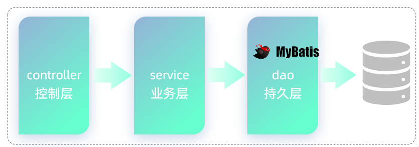
- 框架：是一个半成品软件，是一套可重用的、通用的、软件基础代码模型。在框架的基础上进行软件开发更加高效、规范、通用、可拓展。
通过Mybatis就可以大大简化原生的JDBC程序的代码编写，比如 通过 select * from user 查询所有的用户数据，通过JDBC程序操作呢，需要大量的代码实现，而如果通过Mybatis实现相同的功能，只需要简单的三四行就可以搞定。
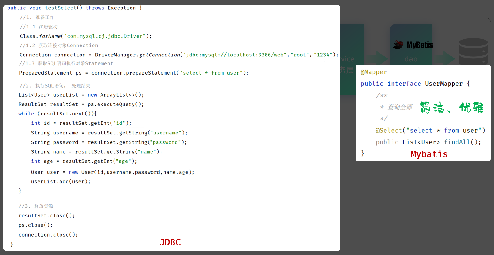
快速入门
需求：使用Mybatis查询所有用户数据 。
1). 创建springboot工程，并导入 mybatis的起步依赖、mysql的驱动包、lombok。
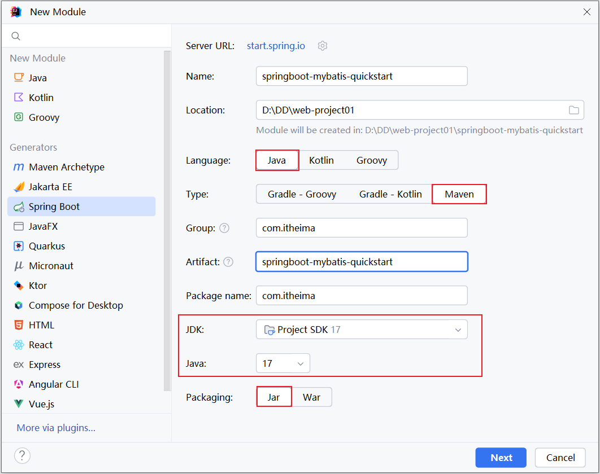
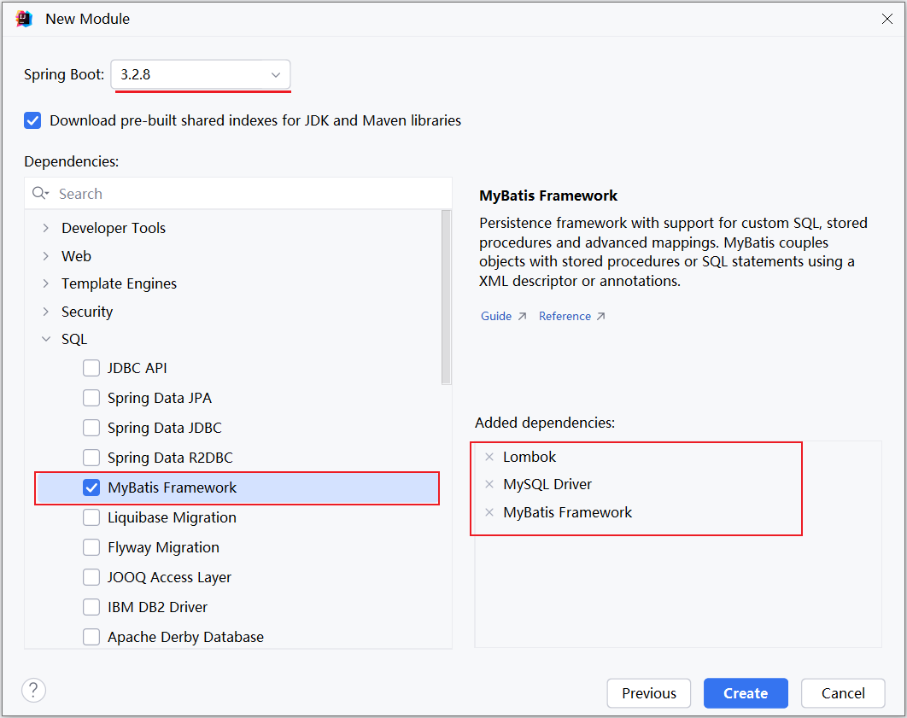
项目工程创建完成后，自动在pom.xml文件中，导入Mybatis依赖和MySQL驱动依赖。如下所示：
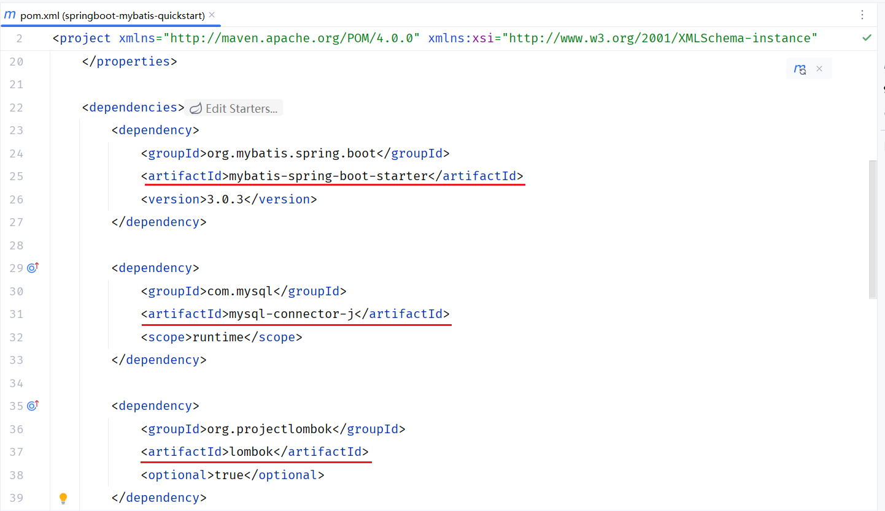
2). 数据准备：创建用户表user，并创建对应的实体类User。
- 用户表 user（如果已经存在，就不用创建了）
create table user(
id int unsigned primary key auto_increment comment 'ID,主键',
username varchar(20) comment '用户名',
password varchar(32) comment '密码',
name varchar(10) comment '姓名',
age tinyint unsigned comment '年龄'
) comment '用户表';
insert into user(id, username, password, name, age) values (1, 'daqiao', '123456', '大乔', 22),
(2, 'xiaoqiao', '123456', '小乔', 18),
(3, 'diaochan', '123456', '貂蝉', 24),
(4, 'lvbu', '123456', '吕布', 28),
(5, 'zhaoyun', '12345678', '赵云', 27);
- 实体类：实体类的属性名与表中的字段名一一对应。 实体类放在
com.itheima.pojo包下。
@Data
@NoArgsConstructor
@AllArgsConstructor
public class User {
private Integer id; //ID
private String username; //用户名
private String password; //密码
private String name; //姓名
private Integer age; //年龄
}
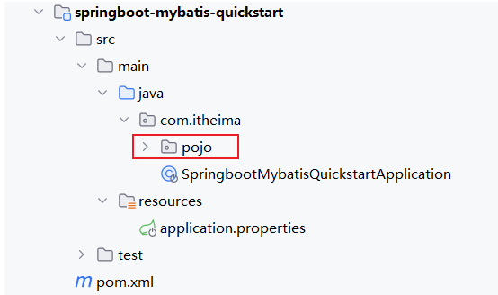
3). 配置Mybatis
在 application.properties 中配置数据库的连接信息。
在写注释的时候需要在 Editor, 中的Filing editor中实现数据的 字符集 修改 -> UTF - 8 ;
# 公式模板
spring.datasource.url=jdbc:mysql://{主机地址}:{端口号}/{数据库名}?{参数1}&{参数2}&{参数3}
spring.datasource.username={用户名}
spring.datasource.password={密码}
spring.datasource.driver-class-name={驱动类全名} # 可选，Spring Boot 自动推断
#数据库访问的url地址
spring.datasource.url=jdbc:mysql://localhost:3306/web
#数据库驱动类类名
spring.datasource.driver-class-name=com.mysql.cj.jdbc.Driver
#访问数据库-用户名
spring.datasource.username=root
#访问数据库-密码
spring.datasource.password=root@1234
上述的配置，可以直接复制过去，不要敲错了。 全部都是 spring.datasource.xxxx 开头。
4). 编写Mybatis程序：编写Mybatis的持久层接口，定义SQL语句（注解）
在创建出来的springboot工程中，在引导类所在包下，在创建一个包 mapper 。在 mapper 包下创建一个接口 UserMapper ，这是一个持久层接口（Mybatis的持久层接口规范一般都叫 XxxMapper）。
UserMapper接口的内容如下：
import com.itheima.pojo.User;
import org.apache.ibatis.annotations.Mapper;
import org.apache.ibatis.annotations.Select;
import java.util.List;
@Mapper
public interface UserMapper {
/**
* 查询全部
*/
@Select("select * from user")
public List<User> findAll();
}
注解说明：
- @Mapper注解：表示是mybatis中的Mapper接口
程序运行时，框架会自动生成接口的实现类对象(代理对象)，并给交Spring的IOC容器管理
- @Select注解：代表的就是select查询，用于书写select查询语句
5). 单元测试 实现的都是面向接口编程 ;
在创建出来的SpringBoot工程中，在src下的test目录下，已经自动帮我们创建好了测试类 ，并且在测试类上已经添加了注解
这个注释必须要在测试类中加上, 测试类是不会自己创建好IOC容器实现配置好环境的 ;
@SpringBootTest，代表该测试类已经与SpringBoot整合。
该测试类在运行时，会自动通过引导类加载Spring的环境（IOC容器）。我们要测试那个bean对象，就可以直接通过@Autowired注解直接将其注入进行，然后就可以测试了。
测试类代码如下：
@SpringBootTest
class SpringbootMybatisQuickstartApplicationTests {
@Autowired DI操作 ;
private UserMapper userMapper; 创建承接数据的对象 ;
@Test
public void testFindAll(){
List<User> userList = userMapper.findAll();
for (User user : userList) {
System.out.println(user);
}
}
}
运行结果：
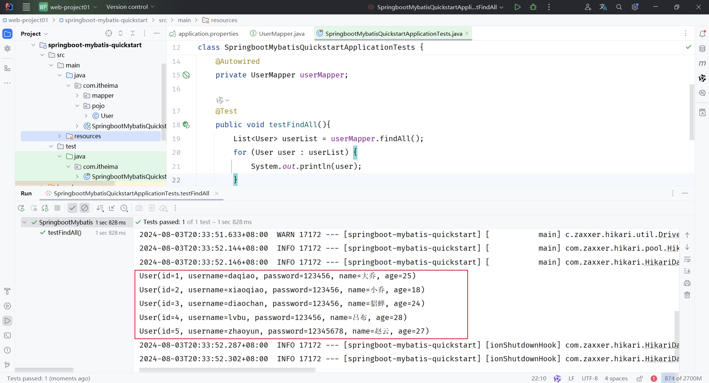
注意：测试类所在包，需要与引导类所在包相同。
一定要注意配置数据库时候的四要素 ;
辅助配置
配置SQL提示
默认我们在UserMapper接口上加的 @Select 注解中编写SQL语句是没有提示的。 如果想让idea给我们提示对应的SQL语句，我们需要在IDEA中配置与MySQL数据库的链接。
默认我们在UserMapper接口上的 @Select 注解中编写SQL语句是没有提示的。如果想让idea给出提示，可以做如下配置：
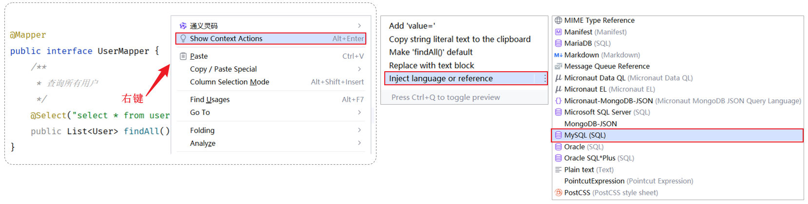
配置完成之后，发现SQL语句中的关键字有提示了，但还存在不识别表名(列名)的情况：
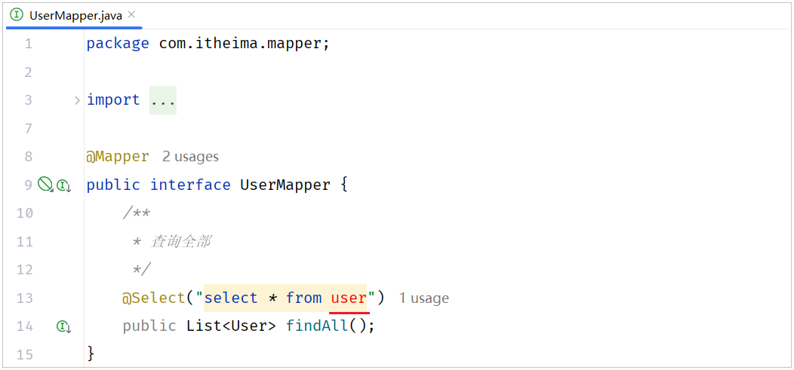
- 产生原因：Idea和数据库没有建立连接，不识别表信息
- 解决方案：在Idea中配置MySQL数据库连接
按照如下方如下方式，来配置当前IDEA关联的MySQL数据库（必须要指定连接的是哪个数据库）。
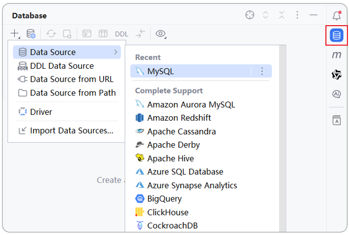
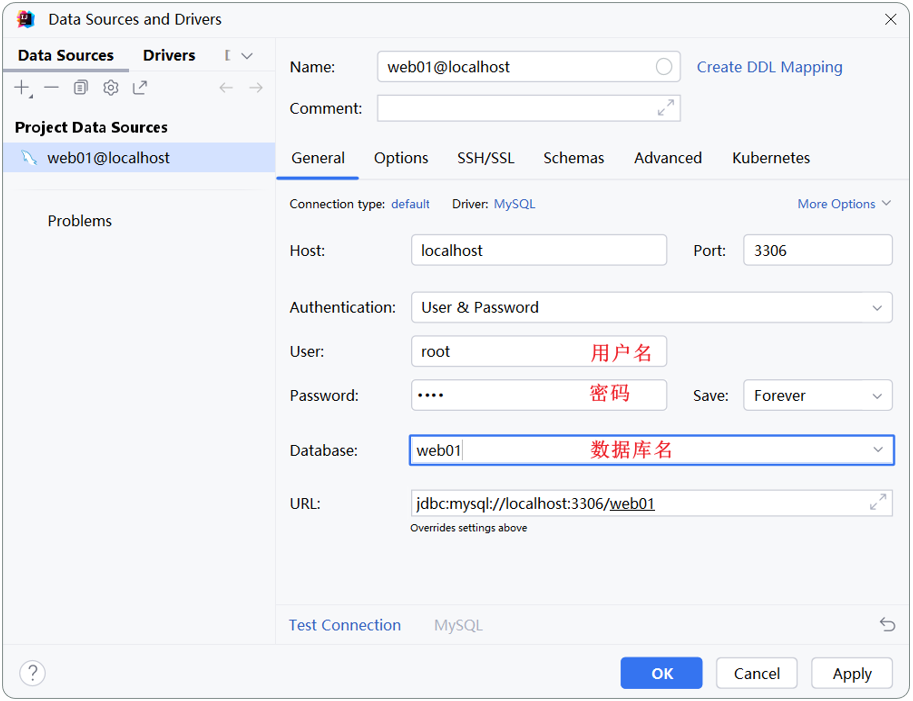
在配置的时候指定连接那个数据库，如上图所示连接的就是mybatis数据库（自己的数据库名是什么就指定什么）。
**注意：**该配置的目的，仅仅是为了在编写SQL语句时，有语法提示（写错了会报错），不会影响运行，即使不配置也是可以的。
配置Mybatis日志输出
通过箭头的朝向 , 可以直接看到互相传递的信息 ;
默认情况下，在Mybatis中，SQL语句执行时，我们并看不到SQL语句的执行日志。 在application.properties加入如下配置，即可查看日志：
#mybatis的配置
mybatis.configuration.log-impl=org.apache.ibatis.logging.stdout.StdOutImpl
打开上述开关之后，再次运行单元测试，就可以看到控制台输出的SQL语句是什么样子的。
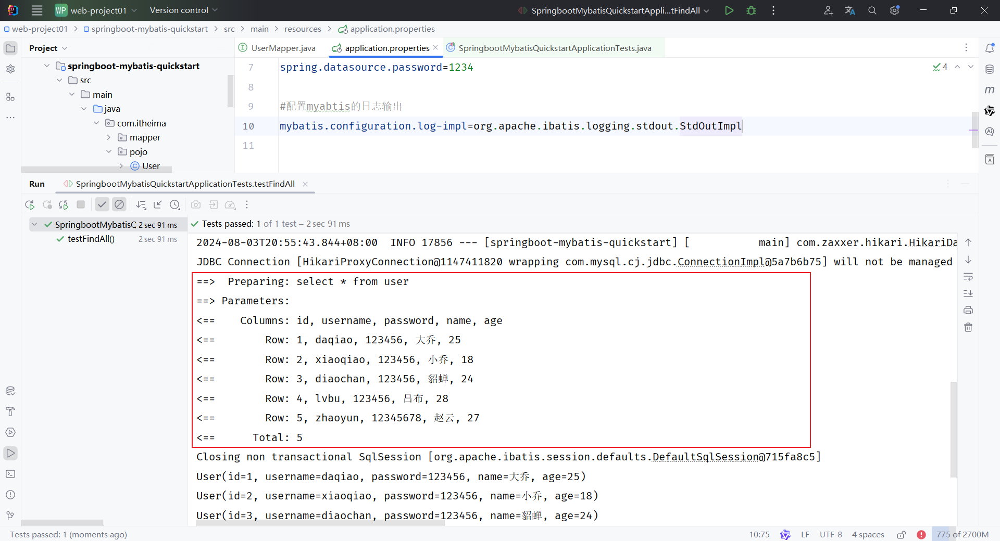
JDBC VS Mybatis
JDBC程序的缺点：
- url、username、password 等相关参数全部硬编码在java代码中。
- 查询结果的解析、封装比较繁琐。
- 每一次操作数据库之前，先获取连接，操作完毕之后，关闭连接。 频繁的获取连接、释放连接造成资源浪费。
分析了JDBC的缺点之后，我们再来看一下在mybatis中，是如何解决这些问题的：
- 数据库连接四要素(驱动、链接、用户名、密码)，都配置在springboot默认的配置文件 application.properties中
- 查询结果的解析及封装，由mybatis自动完成映射封装，我们无需关注
- 在mybatis中使用了数据库连接池技术，从而避免了频繁的创建连接、销毁连接而带来的资源浪费。
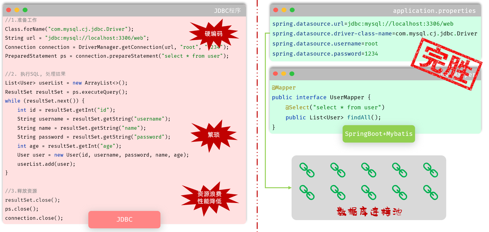
使用SpringBoot+Mybatis的方式操作数据库，能够提升开发效率、降低资源浪费
而对于Mybatis来说，我们在开发持久层程序操作数据库时，需要重点关注以下两个方面：
- application.properties
#驱动类名称
spring.datasource.driver-class-name=com.mysql.cj.jdbc.Driver
#数据库连接的url
spring.datasource.url=jdbc:mysql://localhost:3306/web01
#连接数据库的用户名
spring.datasource.username=root
#连接数据库的密码
spring.datasource.password=1234
- Mapper接口（编写SQL语句）
@Mapper
public interface UserMapper {
@Select("select * from user")
public List<User> list();
}
数据库连接池
在前面我们所讲解的mybatis中，使用了数据库连接池技术，避免频繁的创建连接、销毁连接而带来的资源浪费。
下面我们就具体的了解下数据库连接池。
介绍
1). 没有数据库连接池的情况
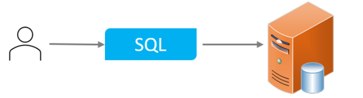
客户端执行SQL语句：要先创建一个新的连接对象，然后执行SQL语句，SQL语句执行后又需要关闭连接对象从而释放资源，每次执行SQL时都需要创建连接、销毁链接，这种频繁的重复创建销毁的过程是比较耗费计算机的性能。
2). 有数据库连接池的情况
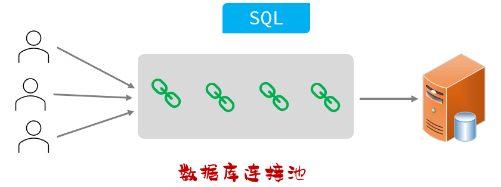
数据库连接池是个容器，负责分配、管理数据库连接(Connection)
- 程序在启动时，会在数据库连接池(容器)中，创建一定数量的Connection对象
允许应用程序重复使用一个现有的数据库连接，而不是再重新建立一个
- 客户端在执行SQL时，先从连接池中获取一个Connection对象，然后在执行SQL语句，SQL语句执行完之后，释放Connection时就会把Connection对象归还给连接池（Connection对象可以复用）
释放空闲时间超过最大空闲时间(拿到连接后不执行SQL语句)的连接，来避免因为没有释放连接而引起的数据库连接遗漏
- 客户端获取到Connection对象了，但是Connection对象并没有去访问数据库(处于空闲)，数据库连接池发现Connection对象的空闲时间 > 连接池中预设的最大空闲时间，此时数据库连接池就会自动释放掉这个连接对象
数据库连接池的好处：
防止重复创建连接导致 耗费资源 和 空间 ;
- 资源重用
- 提升系统响应速度
- 避免数据库连接遗漏
产品
要怎么样实现数据库连接池呢？
- 官方(sun)提供了数据库连接池标准（javax.sql.DataSource接口）
- 功能：获取连接
public Connection getConnection() throws SQLException;
- 第三方组织必须按照DataSource接口实现
常见的数据库连接池：C3P0 、DBCP 、[阿里巴巴开源]Druid 、Hikari (springboot默认)
现在使用更多的是：Hikari 追光者 (当前springboot的默认连接池) 、Druid 德鲁伊 （性能更优越）
1). Hikari（追光者） [默认的连接池]
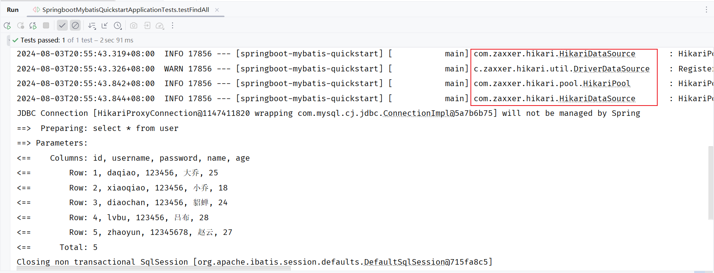
从控制台输出的日志，我们也可以看出，springboot底层默认使用的数据库连接池就是 Hikari。
2). Druid（德鲁伊）
注意作用要作用在全部的文件区间中 ,
路径需要写好 两者都具备后可以直接访问到德鲁伊的源代码;
- Druid连接池是阿里巴巴开源的数据库连接池项目
- 功能强大，性能优秀，是Java语言最好的数据库连接池之一
如果我们想把默认的数据库连接池切换为Druid数据库连接池，只需要完成以下两步操作即可：
参考官方地址：https://github.com/alibaba/druid/tree/master/druid-spring-boot-starter
①. 在pom.xml文件中引入依赖
<dependency>
<!-- Druid连接池依赖 -->
<groupId>com.alibaba</groupId>
<artifactId>druid-spring-boot-starter</artifactId>
<version>1.2.19</version>
</dependency>
②. 在application.properties中引入数据库连接配置
spring.datasource.type=com.alibaba.druid.pool.DruidDataSource
spring.datasource.druid.driver-class-name=com.mysql.cj.jdbc.Driver
spring.datasource.druid.url=jdbc:mysql://localhost:3306/web
spring.datasource.druid.username=root
spring.datasource.druid.password=1234
配置完毕之后，我们再次运行单元测试，大家会看到控制台输出的日志中，已经将连接池切换为了 Druid连接池。
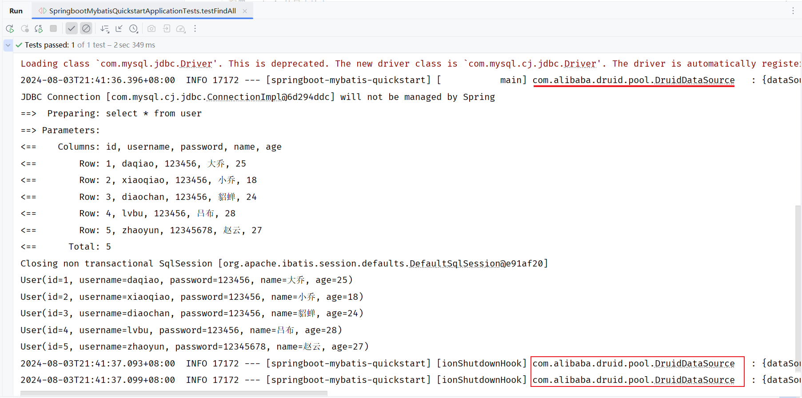
增删改查操作
内部支持的占位符 : #{输入想要实现展位的数据} ;
删除
需求：根据ID删除用户信息
SQL：delete from user where id = 5;
Mapper接口方法：
方式一：
/**
* 根据id删除
*/
@Delete("delete from user where id = 5")
public void deleteById();
这种方式执行删除操作，调用deleteById方法只能删除id为5的用户信息，因为将id直接写死在代码中了，不可取。
- 方式二：
/**
* 根据id删除
*/
@Delete("delete from user where id = #{id}")
public void deleteById(Integer id);
在Mybatis中，我们可以通过参数占位符号 #{...} 来占位，在调用deleteById方法时，传递的参数值，最终会替换占位符。
- 编写单元测试方法进行测试
在单元测试类中,增加如下测试方法.
@Test
public void testDeleteById(){
userMapper.deleteById(36);
}
运行单元测试，结果如下：
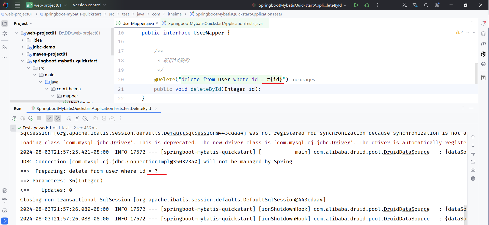
运行之后，我们发现，#{...} 占位符，其实最终被替换成了 ？占位符，生成的是预编译的SQL语句。【推荐】
- DML语句执行完毕，是有返回值的，我们可以为Mapper接口方法定义返回值来接收，如下：
/**
* 根据id删除
*/
@Delete("delete from user where id = #{id}")
public Integer deleteById(Integer id);
Integer类型的返回值，表示DML语句执行完毕影响的行数 ;
- Mybatis的提供的符号，有两个，一个是
#{...}，另一个是${...}，区别如下：
符号 | 说明 | 场景 | 优缺点 |
#{…} | 占位符。执行时，会将#{…}替换为?，生成预编译SQL | 参数值传递 | 安全、性能高 （推荐） |
${…} | 拼接符。直接将参数拼接在SQL语句中，存在SQL注入问题 | 表名、字段名动态设置时使用 | 不安全、性能低 |
那在企业项目开发中，强烈建议使用 #{...} 。
新增
- 需求：添加一个用户
- SQL：insert into user(username,password,name,age) values('zhouyu','123456','周瑜',20);
- Mapper接口：
/**
* 添加用户
*/
@Insert("insert into user(username,password,name,age) values(#{username},#{password},#{name},#{age})")
public void insert(User user);
如果在SQL语句中，我们需要传递多个参数，我们可以把多个参数封装到一个对象中。然后在SQL语句中，我们可以通过#{对象``属性``名}的方式，获取到对象中封装的属性值。
- 单元测试：
在测试类中添加测试方法，代码如下：
@Test
public void testInsert(){
User user = new User();
user.setUsername("admin");
user.setPassword("123456");
user.setName("管理员");
user.setAge(30);
userMapper.insert(user);
}
运行结果如下：
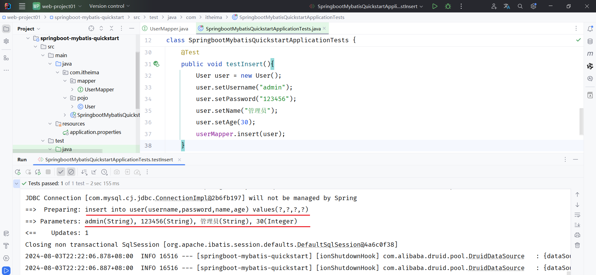
修改
- 需求：根据ID更新用户信息
- SQL：update user set username = 'zhouyu', password = '123456', name = '周瑜', age = 20 where id = 1；
- Mapper接口方法：
/**
* 根据id更新用户信息
*/
@Update("update user set username = #{username},password = #{password},name = #{name},age = #{age} where id = #{id}")
public void update(User user);
- 单元测试：
在测试类中添加测试方法，代码如下：
@Test
public void testUpdate(){
User user = new User();
user.setId(6);
user.setUsername("admin666");
user.setPassword("123456");
user.setName("管理员");
user.setAge(30);
userMapper.update(user);
}
运行结果如下：
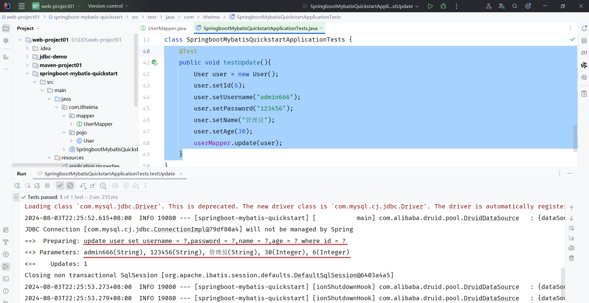
查询
- 需求：根据用户名和密码查询用户信息
- SQL：select*fromuser whereusername = 'zhouyu' and password = '123456'
- Mapper接口方法：
/**
* 根据用户名和密码查询用户信息
*/
@Select("select * from user where username = #{username} and password = #{password}")
public User findByUsernameAndPassword(@Param("username") String username, @Param("password") String password);
@param注解的作用是为接口的方法形参起名字的。（由于用户名唯一的，所以查询返回的结果最多只有一个，可以直接封装到一个对象中）
- 单元测试：
在测试类中添加测试方法，代码如下：
@Test
public void testFindByUsernameAndPassword(){
User user = userMapper.findByUsernameAndPassword("admin666", "123456");
System.out.println(user);
}
运行结果如下：
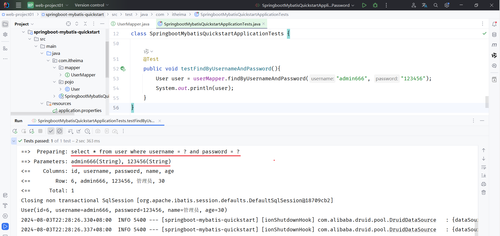
**说明：**基于官方骨架创建的springboot项目中，接口编译时会保留方法形参名，@Param注解可以省略 (#{形参名})。 官方骨架创建的springboot项目 : 在文件创建的pom.xml规格文件中会有一个spring-boot的父工程 ;
内部插件 , 这里的parameters 保留为true 会实现保留 原来形参的构造 ;
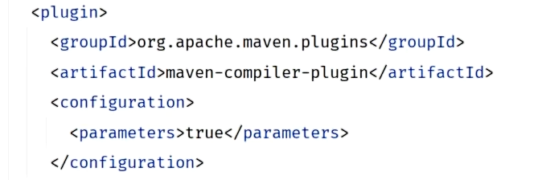
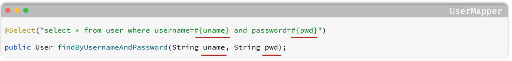
XML映射配置
Mybatis的开发有两种方式：
- 注解
- XML
XML配置文件规范
使用Mybatis的注解方式，主要是来完成一些简单的增删改查功能。如果需要实现复杂的SQL功能，建议使用XML来配置映射语句，也就是将SQL语句写在XML配置文件中。
在Mybatis中使用XML映射文件方式开发，需要符合一定的规范：
- XML映射文件的名称与Mapper接口名称一致，并且将XML映射文件和Mapper接口放置在相同包下（同包同名）
- XML映射文件的namespace属性为Mapper接口全限定名一致
- XML映射文件中sql语句的id与Mapper接口中的方法名一致，并保持返回类型一致。
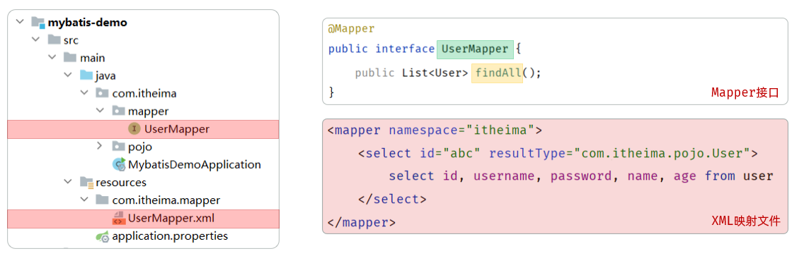
<select>标签：就是用于编写select查询语句的。
- resultType属性，指的是查询返回的单条记录所封装的类型。
XML配置文件实现 :
必须要使用这三步骤实现定义 , 包的位置都不能改变 ;
严格在resource下的mapper包中 ,若是不放置在这个地方 , 需要自己配置XML文件的映射文件路径 ;
# 指定XML文件的映射路径
mybatis.mapper-locations=classpath:mapper/*.xml
第1步： 创建XML映射文件
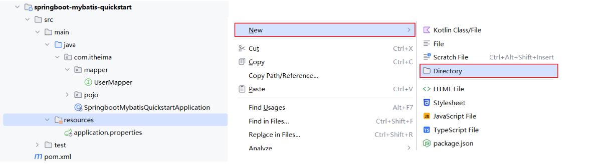
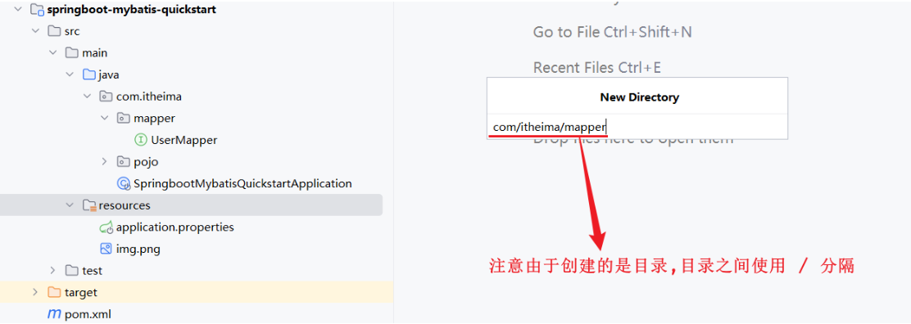
第2步：编写XML映射文件
xml映射文件中的dtd约束，直接从mybatis官网复制即可; 或者直接AI生成。
<?xml version="1.0" encoding="UTF-8" ?>
<!DOCTYPE mapper
PUBLIC "-//mybatis.org//DTD Mapper 3.0//EN"
"https://mybatis.org/dtd/mybatis-3-mapper.dtd">
<mapper namespace="">
</mapper>
第3步：配置
a. XML映射文件的namespace属性为Mapper接口全限定名
<?xml version="1.0" encoding="UTF-8" ?>
<!DOCTYPE mapper
PUBLIC "-//mybatis.org//DTD Mapper 3.0//EN"
"https://mybatis.org/dtd/mybatis-3-mapper.dtd">
<mapper namespace="com.itheima.mapper.UserMapper">
</mapper>
b. XML映射文件中sql语句的id与Mapper接口中的方法名一致，并保持返回类型一致
<?xml version="1.0" encoding="UTF-8" ?>
<!DOCTYPE mapper
PUBLIC "-//mybatis.org//DTD Mapper 3.0//EN"
"https://mybatis.org/dtd/mybatis-3-mapper.dtd">
<mapper namespace="com.itheima.mapper.EmpMapper">
<!--查询操作-->
<select id="findAll" resultType="com.itheima.pojo.User">
select * from user
</select>
</mapper>
resultType 属性的值，与查询返回的单条记录封装的类型一致。
<!-- resultType= 查询返回的单条记录所封装的类型-->
<select id="findall" resultType="com.svhwliao.springbootbatis.pojo.User">
select id , username , password , age from users
</select>
运行测试类，执行结果：
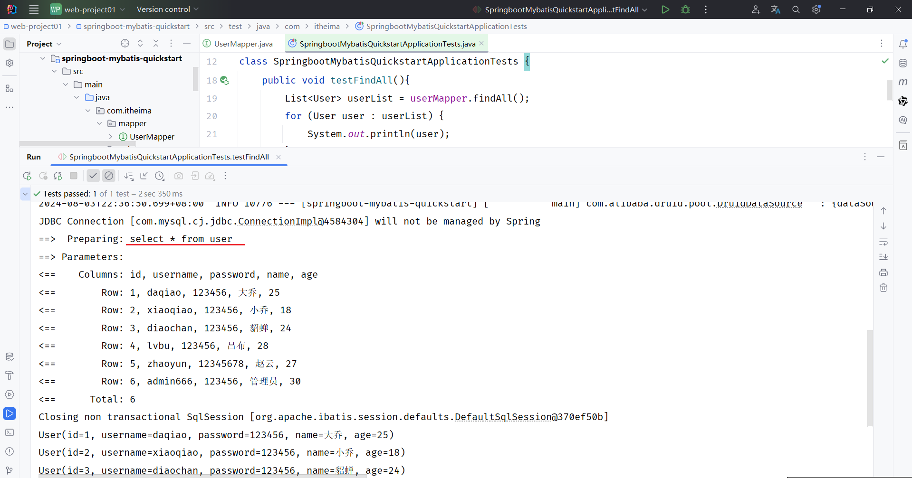
注意：一个接口方法对应的SQL语句，要么使用注解配置，要么使用XML配置，切不可同时配置。
使用的建议 :
在使用简短的SQL 语句:只是用简单的注解方式 ;
需要实现复杂的SQL语句 : 使用XML文件格式 ;
MybatisX的使用
MybatisX是一款基于IDEA的快速开发Mybatis的插件，为效率而生。
MybatisX的安装：
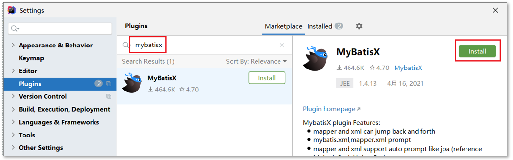
可以通过MybatisX快速定位：
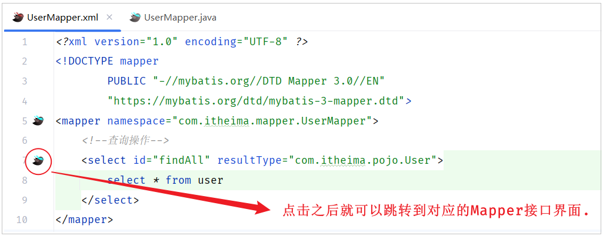
MybatisX的使用在后续学习中会继续分享。
- 学习了Mybatis中XML配置文件的开发方式了，大家可能会存在一个疑问：到底是使用注解方式开发还是使用XML方式开发？
官方说明：https://mybatis\.net\.cn/getting\-started\.html。下面是官方说明:
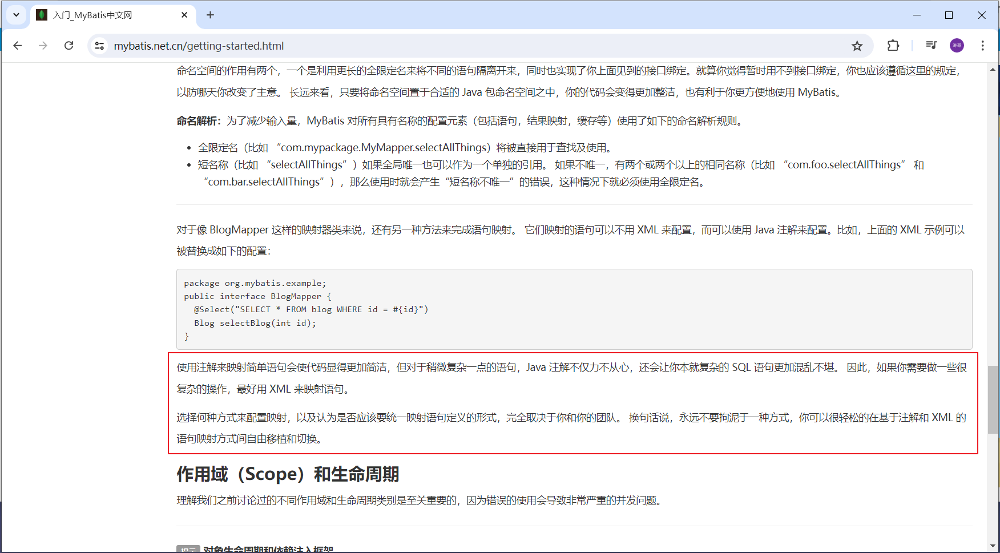
**结论：**使用Mybatis的注解，主要是来完成一些简单的增删改查功能。如果需要实现复杂的SQL功能，建议使用XML来配置映射语句。
后期补充学习 :
@ 实现的SQL 语句类型 ;
实际上就已经实现了内部的预编译环节 , 直接可以使用 #{尽量保持和传入数据的名字相同} ;